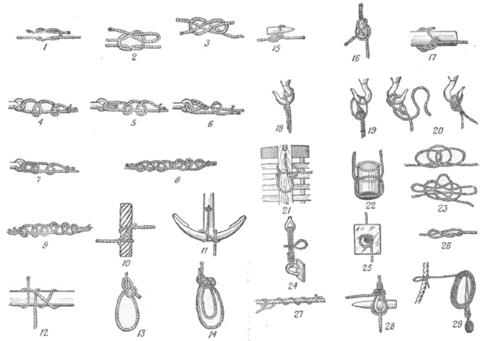

Узлы
Наиболее простым и распространенным способом соединения двух
растительных тросов является их связывание одним из морских узлов. К соединению узлами
стальных тросов следует прибегать только в случае крайней необходимости, поскольку
вследствие крутых изгибов проволок разрывная крепость тросов будет ослаблена и они получат
значительные повреждения. Каждый морской узел должен отвечать следующим основным требованиям
— быстро связываться и развязываться, не распускаться самопроизвольно.
